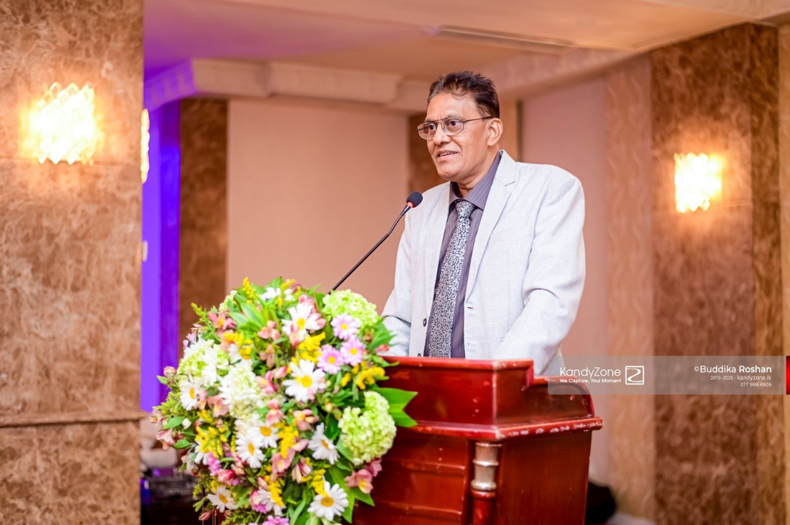
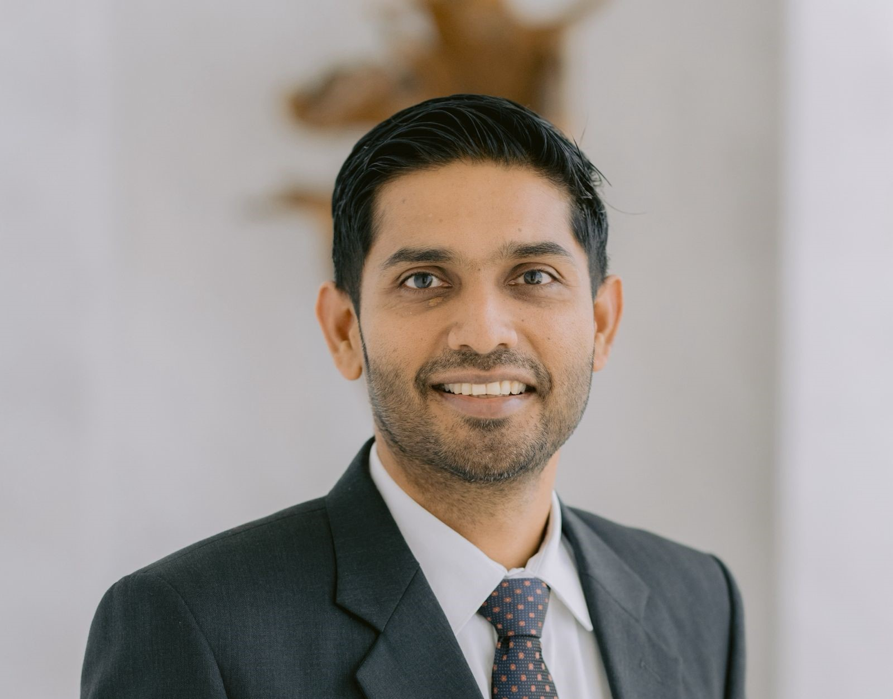
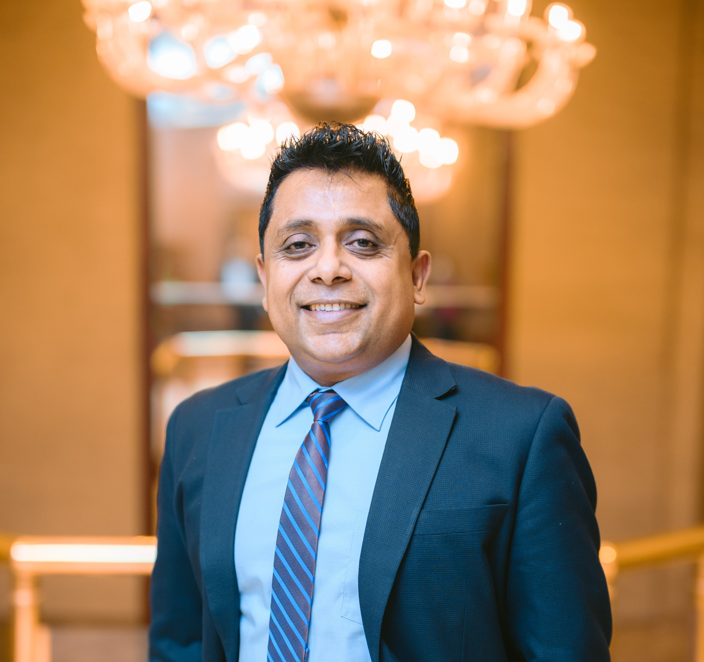

LEARN36
01/10
Strengthening Sri Lanka’s Research and Education Network
Bringing institutions and leaders together to shape the next chapter of digital education and research.
Bringing institutions and leaders together to shape the next chapter of digital education and research.
A milestone gathering focused on collaboration, capacity building, and national platforms for impact.
Building national readiness through technology, responsible adoption, and inclusive access.
Strengthening structures, networks, and shared programs across Sri Lanka’s academic ecosystem.
Creating sustainable platforms aligned with regional frameworks and long-term national priorities.
Connecting universities, partners, and working groups to build repeatable national capability.
Building pathways to exchange ideas, tools, and research outcomes across the ecosystem.
From pilots to national programs—turning collaboration into measurable progress.
Building long-term capability through inclusive technology and shared national direction.
A coordinated foundation for Sri Lanka’s next era of research, innovation, and digital readiness.
LEARN36 represents a milestone in strengthening Sri Lanka’s academic network and preparing institutions for the next phase of digital research and innovation.
Through its national initiatives, LEARN continues to promote collaboration, responsible technology adoption, and inclusive capacity building. By connecting institutions and aligning with regional frameworks such as APAN, LEARN supports educators, researchers, and policy makers in addressing both the opportunities and challenges of the digital era.
Concise, factual milestones emerging from LEARN36.
WG1 – Agriculture Technology (AgroTec) and WG2 – Generative AI for Productivity
Introduction of the “AI Literacy for All” platform in Sinhala and Tamil
Open platform →Strengthened alignment with Asia Pacific Advanced Network (APAN)
Visit APAN →Renewed commitment to inclusive, ethical, and collaborative digital transformation
LEARN official site →Guiding direction for sustained national value, responsible innovation, and regional collaboration.

As Chairman of LEARN, I view these Working Groups as vital national platforms that strengthen trust, continuity, and long-term value in Sri Lanka’s research and education ecosystem. The AgroTec and Generative AI Working Groups reflect LEARN’s commitment to responsible innovation, inclusive participation, and regional cooperation. By fostering strong governance, strategic alignment, and sustained engagement with APAN, we ensure that these initiatives endure beyond individual projects, supporting national priorities while contributing meaningfully to the Asia-Pacific research and education community.

I envision our Working Groups as catalysts that connect Sri Lanka’s research and education community to the broader Asia-Pacific ecosystem. Through the AgroTec and Generative AI Working Groups, we aim to empower institutions, nurture innovation, and translate emerging technologies into real societal impact. These platforms will strengthen collaboration, shape forward-looking policies, and amplify Sri Lanka’s contributions to APAN. Together, we are building sustainable, future-ready networks that drive productivity, knowledge sharing, and regional leadership.

As CTO of LEARN, my focus is on translating vision into action for national and societal benefit. These groups serve as practical, collaborative platforms for piloting technologies, building capacity, and delivering measurable outcomes in agriculture, education, research, and productivity. By aligning closely with APAN Working Groups, we ensure that Sri Lanka’s initiatives are technically strong, globally connected, and scalable, turning ideas into deployable solutions that create real value for society.